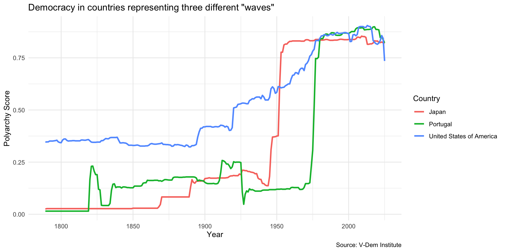
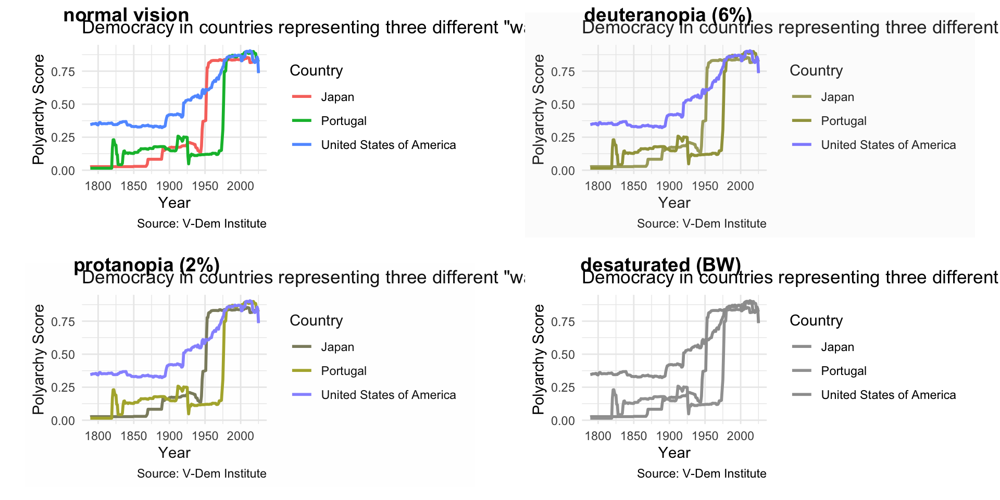
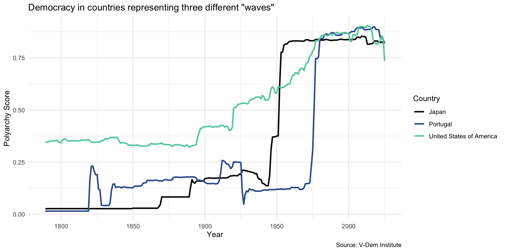
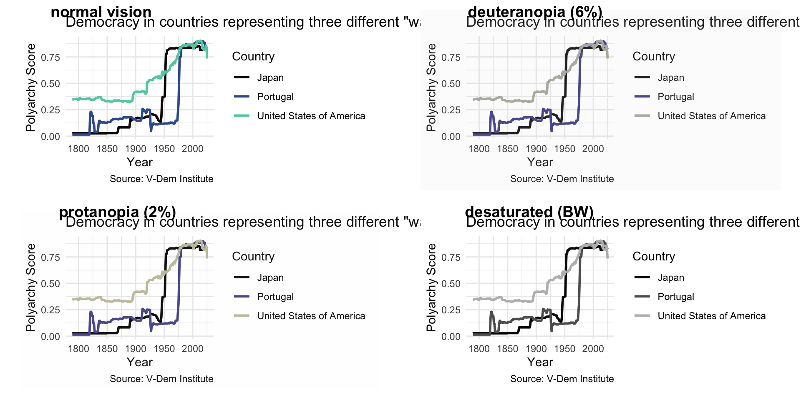

Visualizing Data
May 20, 2026
Reading Data into R
Getting Started with Data
- Tabular data is data that is organized into rows and columns
- a.k.a. rectangular data
- A data frame is a special kind of tabular data used in data science
- A variable is something you can measure
- An observation is a single unit or case in your data set
- The unit of analysis is the level at which you are measuring
- In a cross-section: country, state, county, city, individual, etc.
- In a time-series: year, month, day, etc.
Example

Some Basic R Code
<-is the assignment operator- Use it to assign values to objects
#is the comment operator- Use it to comment out code or add comments
- Different function than in markdown text
- To call a library, use
library()and name of library- name of library does not have to be in quotes, e.g.
library(readr) - only when you install it, e.g.
install.packages("readr")
- name of library does not have to be in quotes, e.g.
Read Data into R
Viewing the Data in R
Use glimpse() to see the columns and data types:
# load libraries
library(readr)
library(dplyr)
dem_summary <- read_csv("data/dem_summary.csv")
glimpse(dem_summary)Rows: 6
Columns: 5
$ region <chr> "The West", "Latin America", "Eastern Europe", "Asia", "Afri…
$ polyarchy <dbl> 0.8709230, 0.6371358, 0.5387451, 0.4076602, 0.3934166, 0.245…
$ gdp_pc <dbl> 37.913054, 9.610284, 12.176554, 9.746391, 4.410484, 21.134319
$ flfp <dbl> 52.99082, 48.12645, 50.45894, 50.32171, 56.69530, 26.57872
$ women_rep <dbl> 28.12921, 21.32548, 17.99728, 14.45225, 17.44296, 10.21568Or use View() or click on the name of the object in your Environment tab to see the data in a spreadsheet:

Try It Yourself!
- Open the CSV file to see what it looks like
- Then use this code to read it into R and view it
Bar Charts
The Grammar of Graphics
- Data viz has a language with its own grammar
- Basic components include:
- Data we are trying to visualize
- Aesthetics (dimensions)
- Geom (e.g. bar, line, scatter plot)
- Color scales
- Themes
- Annotations
Let’s start with the first two, the data and the aesthetic…
This gives us the axes without any visualization:

Now let’s add a geom. In this case we want a bar chart so we add geom_col().
That gets the idea across but looks a little depressing, so…

…let’s change the color of the bars by specifying fill = "steelblue".
Note how color of original bars is simply overwritten:

Now let’s add some labels with the labs() function:
And that gives us…

Next, we reorder the bars with fct_reorder() from the forcats package.
Note that we could also use the base R reorder() function here.
This way, we get a nice, visually appealing ordering of the bars according to levels of democracy…

Now let’s change the theme to theme_minimal().
Gives us a clean, elegant look.

Note that you can also save your plot as an object to modify later.
Which gives us…

Now let’s add back our labels…
So now we have…

And now we’ll add back our theme…
Voila!

Change the theme. There are many themes to choose from.

Your Turn!
glimpse()the data- Find a new variable to visualize
- Make a bar chart with it
- Change the color of the bars
- Order the bars
- Add labels
- Add a theme
- Try saving your plot as an object
- Then change the labels and/or theme
Link to Classwork Folder
Huntington’s Three Waves
Setup
Line Chart

Here is the code…
# in this ggplot() call, we add a third dimension for line color
ggplot(dem_waves_ctrs, aes(x = year, y = polyarchy, color = country)) +
geom_line(linewidth = 1) + # our geom is a line with a width of 1
labs(
x = "Year",
y = "Polyarchy Score",
title = 'Democracy in countries representing three different "waves"',
caption = "Source: V-Dem Institute",
color = "Country" # make title of legend to upper case
)Use geom_line() to specify a line chart…
# in this ggplot() call, we add a third dimension for line color
ggplot(dem_waves_ctrs, aes(x = year, y = polyarchy, color = country)) +
geom_line(linewidth = 1) + # our geom is a line with a width of 1
labs(
x = "Year",
y = "Polyarchy Score",
title = 'Democracy in countries representing three different "waves"',
caption = "Source: V-Dem Institute",
color = "Country" # make title of legend to upper case
)Add third dimension to the aes() call for line color…
# in this ggplot() call, we add a third dimension for line color
ggplot(dem_waves_ctrs, aes(x = year, y = polyarchy, color = country)) +
geom_line(linewidth = 1) + # our geom is a line with a width of 1
labs(
x = "Year",
y = "Polyarchy Score",
title = 'Democracy in countries representing three different "waves"',
caption = "Source: V-Dem Institute",
color = "Country" # make title of legend to upper case
)Modify the legend title…
# in this ggplot() call, we add a third dimension for line color
ggplot(dem_waves_ctrs, aes(x = year, y = polyarchy, color = country)) +
geom_line(linewidth = 1) + # our geom is a line with a width of 1
labs(
x = "Year",
y = "Polyarchy Score",
title = 'Democracy in countries representing three different "waves"',
caption = "Source: V-Dem Institute",
color = "Country" # make title of legend to upper case
)Problem

Color Blindness
- Color Vision Deficiency (CVD) or color blindness affects 8 percent of men and 1 in 200 women
- There are different types of CVD but most common is red-green color blindness
- Therefore, don’t include red and green in the same chart!
- Look for color blind safe palettes
Solution: Use a colorblind safe color scheme like viridis…

Use scale_color_viridis_d() in this case to specify the viridis color scheme…
# in this ggplot() call, we add a third dimension for line color
ggplot(dem_waves_ctrs, aes(x = year, y = polyarchy, color = country)) +
geom_line(linewidth = 1) + # our geom is a line with a width of 1
labs(
x = "Year",
y = "Polyarchy Score",
title = 'Democracy in countries representing three different "waves"',
caption = "Source: V-Dem Institute",
color = "Country" # make title of legend to upper case
) +
scale_color_viridis_d(option = "mako", end = .8) # use viridis color paletteBetter!

Palettes
- There are a number of viridis palettes
- See this reference to view different palettes and options
- You can also use
scale_color_viridis_c()to specify a continuous color scale - Also check out the paletteer package for easy access to many more palettes
Your Turn!
- See table three of this article
- Select three countries to visualize
- Adjust setup code to filter data on those countries
- Visualize with
geom_line() - Use
scale_color_viridis_d()to specify a viridis color scheme